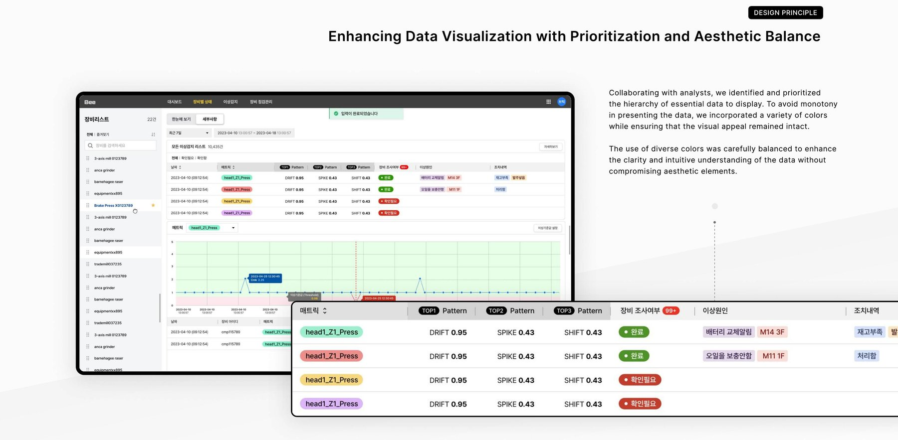
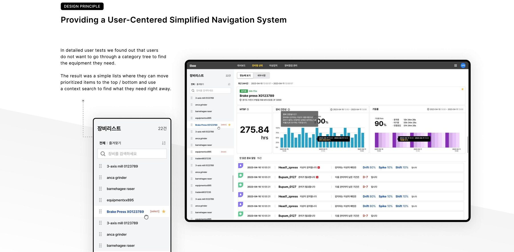
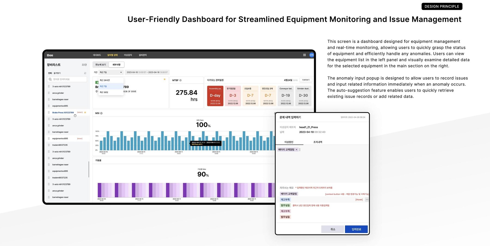

Equipment Notification System
A real-time equipment monitoring dashboard ("Bee") that turns scattered alerts into a single, prioritized workflow.

I designed Bee, an equipment notification and monitoring system sold to manufacturing companies including SK hynix. The product visualizes complex, real-time equipment data and surfaces the issues that actually need a human's attention.

"Green means go. Yellow means look closer.
Never make anyone guess."
Challenge: Real-time data, without the overwhelm.
Effectively visualizing complex, real-time equipment data without overwhelming users was a major challenge, requiring extensive research and iterative improvements to balance clarity and informativeness.
Understanding and incorporating user workflows was crucial in deciding which information to prioritize and how to structure it on the dashboard — one that also had to stay scalable as data volume and complexity grew, while fitting cleanly into existing manufacturing environments.
Approach: A workflow-centric dashboard.
The main section of the dashboard provides an overview of equipment status, with anomalies highlighted using color indicators, while the left panel surfaces notifications about the detailed components of each piece of equipment.

Lists, not category trees.
In detailed user tests, we found that users did not want to dig through a category tree to find the equipment they needed. The result is a simple list where operators can pin priority items to the top or bottom and use context search to find what they need right away.
Prioritized, color-balanced data.
Working with analysts, we identified and prioritized the hierarchy of essential data to display, incorporating a variety of colors to avoid monotony while keeping the clarity and aesthetic balance intact.
Cards that say a lot without saying too much.
Essential data is prioritized and organized within each equipment card, so status, MTBF, and uptime are all visible at a glance in a clear, consistent layout.
Record an issue the moment it happens.
The anomaly input popup lets operators record issues and related information immediately when an anomaly occurs, with an auto-suggestion feature that retrieves existing issue records or lets them add new related data on the spot.

Impact: Faster decisions, less digging.
The UI was designed with a workflow-centric approach that let users interpret data quickly and eliminated unnecessary steps to make decision-making easier. The redesigned interface highlighted easy access to critical data and integrated real-time alerts seamlessly, reducing response times and improving operational efficiency.
Reflection
Real-time monitoring tools live or die by what they *don't* show. Bee's biggest wins came from cutting screens, not adding them.